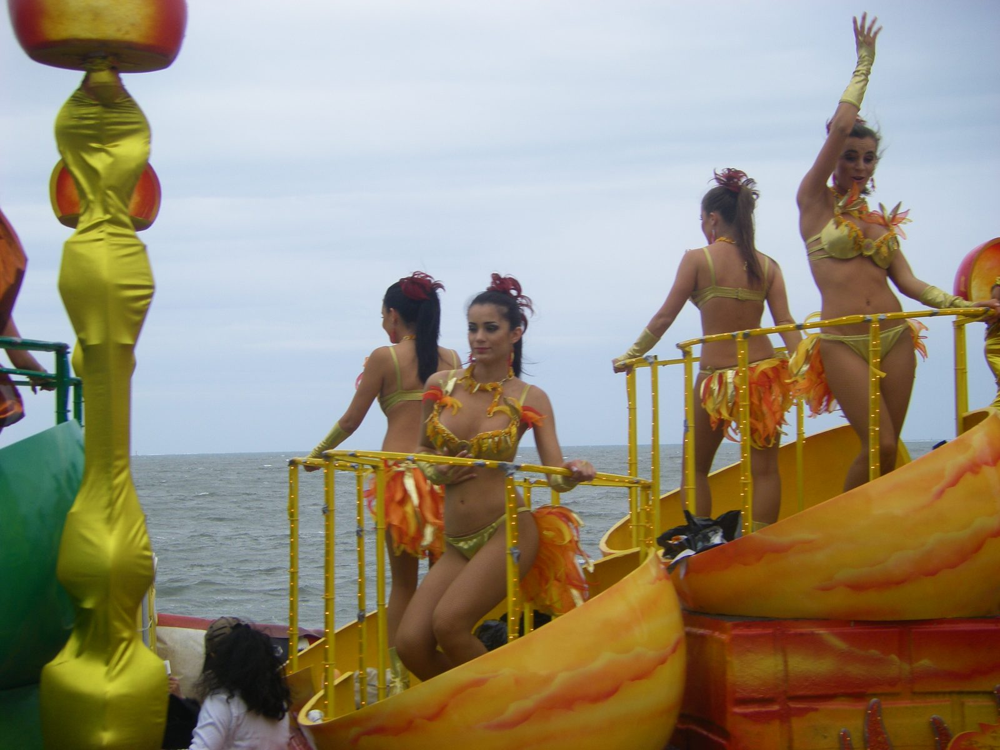

Festivals · Culture
Carnaval de Veracruz 2027
- Dates
- –
- Location
- Veracruz, Mexico
- Format
- In-person
- Category
- Culture
- Industry
- Carnival / Culture
- Organiser
- H. Ayuntamiento de Veracruz
- Official website
- https://veracruzmunicipio.gob.mx/wp-content/uploads/2026/09/ConvocatoriaRey2027.pdf
About
Mexico dates are local (Mexico City time, UTC-6, unless the venue is in another Mexican time zone).
Topics: carnival, parades, music.
No organiser attendance figure found on the official pages checked (23 Nov 2026). Ranked by an estimated size tier 'very large' (about 100,000+ attendees; our judgement from format, venue and scale, not an official number).
Sources
- Official (Veracruz municipality) — https://veracruzmunicipio.gob.mx/wp-content/uploads/2026/09/ConvocatoriaRey2027.pdf